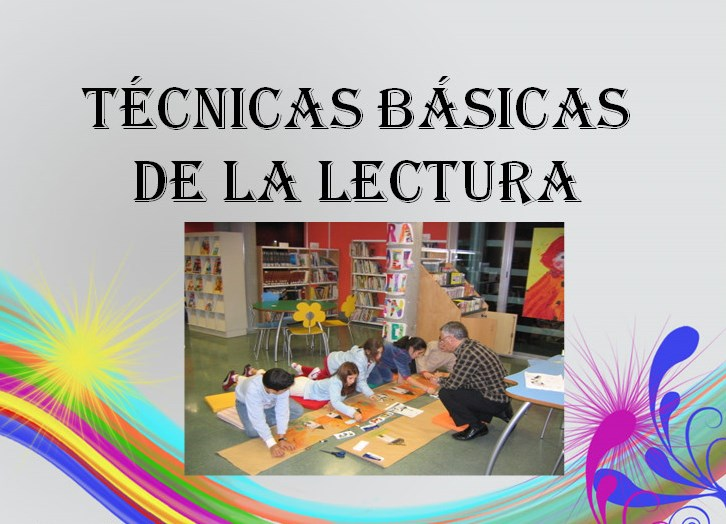

Tecnicas
Existen muchas formas de leer, y cada persona lo hace a un ritmo diferente con el tema que le despierte más interés. Hay quienes lo hacen con música y otros necesitan el silencio para concentrarse. Y aunque puede ser algo muy personal, hay diferentes técnicas de lectura que facilitan esta tarea.
Cada una de las técnicas para leer de manera más efectiva que se presentan a continuación tiene su espacio y tiempo de aplicación, y se complementan unas a otras para que el resultado sea mucho mejor.
1.-Lectura En Voz Alta
Esta es una de las técnicas más comunes que se enseña para obtener una comprensión de lo que se dice y una secuencia lógica de la lectura. Permite al lector mejorar la dicción y pronunciación de las palabras en general.
Utilizando esta técnica se obtiene un avance en la oratoria, puede mejorar la forma de entender el texto, y agiliza el habla ya que las entonaciones darán una emoción diferente a cada parte del tema a exponer.
Esto lo hará mucho más entretenido, por lo que se recomienda iniciar con este hábito en los niños quienes al escuchar las historias bien narradas imitarán a quien los incentive a leer.
2.-Lectura En Silencio
Es una de las maneras más simples de leer. La lectura silenciosa permite utilizar el tiempo necesario para cada palabra, ya que es un proceso personal en el que no se involucra a otras personas.
La comprensión lectora es mayor debido a que el proceso mental se realiza de una manera lógica y concentrada. Un ejemplo podría ser la lectura que se hace en una biblioteca o en solitario en la habitación.
3.-Lectura Secuencial
Consiste en leer el texto sin detenerse o devolverse a releer algún punto para así formarse una idea general de lo que se desea transmitir con la lectura.
Esta es una de las primeras técnicas de lectura que se recomiendan sobre todo cuando se está iniciando en este tipo de entrenamiento, previamente a otras técnicas más avanzadas.
4.-Lectura Puntual
Es cuando se busca algún tipo de información específica y se pasa la vista por el texto hasta que se encuentra alguna de las palabras claves sobre lo que se desea aprender. Básicamente el lector se vuelve un buscador.
La ventaja de esta técnica es que se mejora la velocidad de lectura manteniendo el enfoque solo en la información deseada.
5.-Lectura Rápida
La técnica de lectura rápida se considera como una de las maneras más eficientes para consumir la mayor cantidad de información en corto tiempo. También empleada como técnica de estudio se aplica para lecturas de mayor contenido donde se requiere absorber grandes cantidades de información, como puede ser el aprendizaje de un tema escolar.
La ventaja de poder realizar una lectura rápida es que se aprovecha mucho más el uso del tiempo en la adquisición de información válida y comprensible.
6.-Lectura Diagonal
Es una de las mejores técnicas para leer de manera muy rápida un texto, sacando del mismo el contenido que se quiere mantener como información adicional.
Consiste en pasar la mirada desde la parte superior izquierda, donde comienza la página, hasta la parte inferior derecha donde termina haciendo un movimiento de zig zag con la mirada. El lector captará la mayor cantidad de datos en el entretanto.
7.-Lectura Intensiva
Es una forma de leer un texto al que se le realiza un análisis bastante profundo para entender incluso más allá de lo que superficialmente está escrito.
Comúnmente se emplea como técnica de lectura al aprender un idioma nuevo, ya que requiere que se entienda una secuencia escrita de manera lógica pero en otra lengua. Así se tiene el contexto de lo que se está leyendo.
No se recomienda cuando lo que se está leyendo es un documento legal o contrato en el que se debe entender cada palabra y el contexto que lo envuelve.
8.-Photo Reading
Es una técnica de lectura que consiste en pasar la vista por encima del texto para tener una idea general del contenido identificando algunas palabras e ideas más resaltantes.
Suele ser similar a la lectura rápida, pero en este caso se emplea mayormente la memoria fotográfica del lector, más que la gramatical.
9.-Skimming
Es una metodología que se basa en entender el primer y último párrafo, pasando por el resto de la lectura y así poder captar la idea general de lo que se está leyendo.
Se usa para buscar información puntual, como una fecha, algún nombre específico o un dato relevante que se encuentre en ese texto, así como frases que resalten o algún tipo de resumen que esté dentro de la misma publicación
10.-Lectura Especializada
Este tipo de lectura se usa en un tema específico o especializado. Es una de las técnicas de lectura enfocadas en procesos como el braille, lectura de partituras musicales, matemáticas o procesos químicos, entre otros.
Para poder realizar este tipo de lectura se debe tener el conocimiento previo del tema en cuestión, ya que se usará un lenguaje específico que puede llegar a ser poco comprensible para quienes no tengan una base.
REDACCIÓN Y ORTOGRAFÍA
Tips para mejorar la ortografía y la redacción:
Lee y subraya: realiza marcas con un lápiz para indicar las palabras que no conoces o aquellas en las que consideras que necesitas practicar. Recuerda que no es necesario que realices este ejercicio solo con libros especializados de tu carrera, también lo puedes hacer con alguna novela o con periódicos.
Estudia las reglas ortográficas: la página oficial de la Real Academia Española (RAE) puede ser de mucha ayuda cuando tengas dudas en el significado de una palabra o de cómo se escribe. Otro sitio es Fundeu, un espacio donde encontrarás ejemplos y aplicaciones de las palabras, cabe mencionar que ellos también se basan en las reglas de la RAE.
Haz de la ortografía parte de tu rutina: al momento de usar redes sociales o comunicarte con amigos a través de mensajes de texto, intenta escribir todas las palabras de manera correcta y sin abreviaturas, usa acentos, comas y signos de puntuación, de esta manera tú aprendes y ayudas a que tus amigos mejoren también.

La ortografía y redacción dicen mucho de tu personalidad, por lo que es importante que constantemente mantengas tus conocimientos actualizados y te esfuerces por mejorar tus áreas de oportunidad. Además, recuerda que si usas tu tiempo libre para mejorar estas habilidades y prepararte profesionalmente, más fácil será integrarte al mundo laboral o crecer dentro de la empresa en la que laboras.